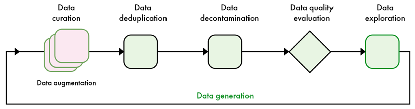
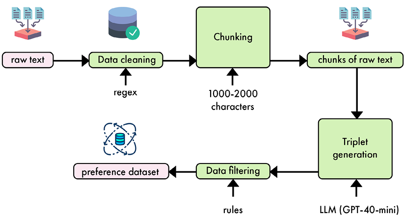
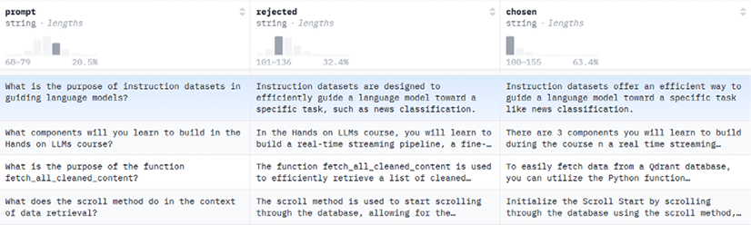
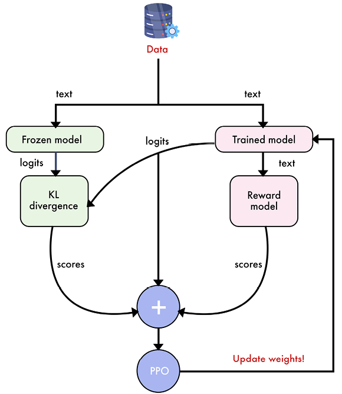
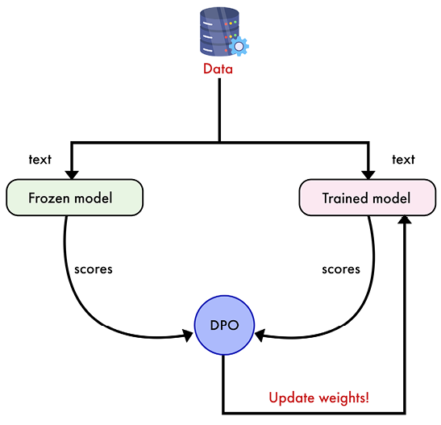
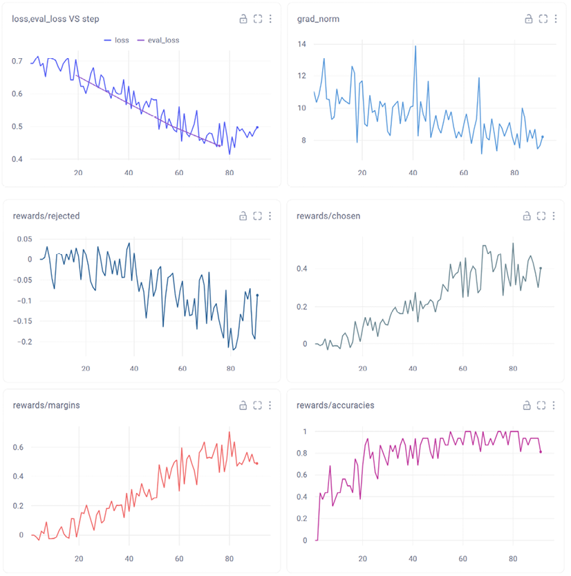

章節導讀Introduction
監督式微調（Supervised Fine-Tuning, SFT）對於讓大型語言模型（LLM）執行特定任務一直至關重要。然而，SFT 難以捕捉人類偏好的細微差異，以及模型可能遇到的長尾互動情境。這項限制促使人們開發出更先進的技術，用來讓 AI 系統與人類偏好對齊，這類技術統稱為「偏好對齊」（preference alignment）。
English original
偏好對齊透過在訓練流程中納入直接的人類或 AI 回饋，來彌補 SFT 的不足。這種方法能更細緻地理解人類偏好，特別是在單純監督式學習力有未逮的複雜情境中。雖然偏好對齊的技術眾多，為求簡單與效率，本章將主要聚焦於直接偏好優化（Direct Preference Optimization, DPO）。
English original
本章將討論 DPO 這類偏好對齊演算法所需的資料類型。我們會自行建立資料集，以改變模型的寫作風格，讓它不那麼造作、更為自然。我們將介紹 DPO 演算法，並實際實作，以對齊第 5 章訓練出的模型。
English original
本章涵蓋的主題如下：
English original
- 認識偏好資料集
- 如何建立自己的偏好資料集
- 直接偏好優化（DPO）
- 在實務中實作 DPO 以對齊我們的模型
讀完本章後，你將能夠建立自己的偏好資料集，並運用多種技術對齊模型。
English original
認識偏好資料集Understanding preference datasets
建立高品質偏好資料集的原則，與第 5 章討論的指令資料集相同：我們要最大化樣本的正確性、多樣性與複雜度。為此，我們遵循相同的階段，如圖 6.1 所示：資料整理（data curation）、去重（deduplication）、去汙染（decontamination）、品質評估、探索、生成與擴增。
English original

Figure 6.1 – Overview of the post-training data pipeline covered in this chapter
為避免重複，本節將聚焦於指令資料集與偏好資料集之間的主要差異。我們會介紹偏好樣本的結構，以及偏好資料集的理想規模。接著，我們會聚焦於與建立指令資料集差異最大的兩個階段：資料生成與評估。
English original
偏好資料Preference data
由於不同訓練演算法對資料的要求各異，偏好資料集缺乏指令資料集那樣的標準化格式。偏好資料是針對某個指令的一組回覆，並由人類或語言模型排序。本章聚焦於 DPO，因此我們將檢視此演算法所需的特定資料格式。
English original
如表 6.1 所示，DPO 資料集的結構相當直接：每個指令搭配一個偏好答案與一個被拒答案。目標是訓練模型產生偏好回覆，而非被拒回覆。
English original
| Instruction／指令：Tell me a joke about octopuses.（說個關於章魚的笑話。） | ||
|---|---|---|
| Chosen answer／偏好答案 | Rejected answer／被拒答案 | |
| Why don't octopuses play cards in casinos? Because they can't count past eight. 章魚為什麼不在賭場玩牌？因為牠們數不到八以上。 |
How many tickles does it take to make an octopus laugh? Ten tickles. 要搔幾下才能讓章魚笑？十下。 |
|
在偏好資料集中，被拒回覆與偏好回覆同等重要。少了被拒回覆，資料集就只是單純的指令集。被拒回覆代表我們希望從模型中消除的行為。這帶來很大的彈性，使偏好資料集能應用於許多情境。以下列出偏好資料集比單純使用 SFT 更有優勢的例子：
English original
- 聊天機器人：在對話式 AI 中，回覆品質往往取決於自然度、互動感與情境適切性等主觀因素。偏好資料集讓模型透過比較較好與較差的回覆，學習這些細微層面。單純的 SFT 可能無法捕捉在特定情境下，什麼讓某個回覆比另一個更可取。
- 內容審核：判斷內容是否適當或違反規範，通常涉及細緻的判斷。偏好資料集能協助模型透過比較可接受與不可接受的內容範例，學會區分邊界案例。這比用 SFT 做二元分類更有效，因為它能讓模型理解審核決策背後的推理。
- 摘要：摘要品質往往取決於簡潔性、相關性與連貫性等因素。使用偏好資料集，模型能學會產生人類認為更有用、更具資訊量的摘要。單純的 SFT 可能產生技術上正確、但人類讀者較不青睞的摘要。
- 程式碼生成：在程式設計任務中，常有多個正確解法，但有些比其他更有效率、更易讀，或更符合最佳實務。偏好資料集能協助模型學習這些程式碼品質的質性層面，而這可能無法透過僅以正確性為基礎的 SFT 捕捉。
- 創意寫作：對於故事生成或詩歌寫作等任務，輸出品質高度主觀且多面向。偏好資料集比指令資料集更能捕捉人類對風格、創意與情感衝擊的判斷；後者可能更側重技術正確性或對提示的遵循。
- 翻譯：雖然 BLEU 分數等傳統指標能衡量翻譯準確度，但它們未必能捕捉翻譯的流暢度或自然度。偏好資料集能協助模型學會產生母語者偏好的譯文，即使多個譯文在技術上都正確。
在所有這些情境中，偏好資料集都能實現更精細的訓練方式。它們捕捉了超越單純正確性或指令遵循的主觀品質評估與人類偏好。這種方法能產生不僅技術上準確，且在複雜、開放式任務中更符合人類判斷與偏好的輸出。
English original
與指令資料集不同，偏好資料集沒有 Alpaca 或 ShareGPT 這類標準化的儲存格式。多數偏好資料集採用類似表 6.1 的結構，包含指令、偏好答案與被拒答案等欄位。多輪對話在偏好對齊中並不常見；截至撰寫本書時，主流微調函式庫不支援多輪對話，通常只擷取對話中的第一則或最後一則訊息。
English original
資料量Data quantity
相較於指令資料集，DPO 資料集通常只需較少的樣本，就能顯著影響模型行為。與指令資料集一樣，所需樣本數取決於模型規模與任務複雜度。較大的模型樣本效率更高，因此需要較少資料；而複雜任務則需要更多範例才能捕捉到期望行為。同樣地，資料品質至關重要，一般而言，大量的偏好配對是有益的。
English original
通用對齊（general-purpose alignment）是 LLM 供應商用來提升微調模型整體效能的作法，這需要數百萬筆樣本的偏好資料集。AI 產業的主要玩家，包括 Nvidia 與 Meta，正逐步收斂到類似的後訓練流程，涉及多輪偏好對齊與大量使用合成資料。這種共識顯示，這些方法正被證明是推動語言模型能力邊界最有效的手段。
English original
在較小的規模上，開源社群使用 10,000 至 100,000 筆樣本的資料集來提升模型效能。這種作法不僅在提升基準分數上有效，也能在模型合併、剪枝與其他修改之後「療癒」網路。一般而言，DPO 的破壞性低於 SFT，對最終模型的影響也較溫和。
English original
另一方面，前述這類任務所需的偏好配對較少。任務特定對齊（task-specific alignment）著重於改善模型在特定功能上的表現，例如修改寫作風格、拒絕特定指令等。這類對齊通常可用較小的資料集達成，視任務複雜度而定，約 100 至 10,000 組偏好配對。
English original
一個只需要少量樣本的應用範例，是讓模型表明自己並非由 OpenAI、Meta 或其他 LLM 供應商訓練。這可以用偏好資料集達成：被拒答案宣稱其他來源，偏好答案則正確表明模型是由你訓練的。約 200 至 500 組配對的相對小型資料集，就足以完成這項任務。
English original
資料生成與評估Data generation and evaluation
建立偏好資料集時，資料生成與評估密切相關。我們先產生答案，再對它們評分，以形成最終資料集。以下我們將這兩個步驟視為同一個流程介紹，而非兩個獨立流程。
English original
生成偏好資料Generating preferences
在製作新的偏好資料之前，最好先查看相關的開源資料集。這類資料集比指令資料集少，但你可以在 Hugging Face Hub 上找到高品質的偏好資料集。它們可用於特定任務，或加入你自己的資料集。知名的偏好資料集包括 Anthropic 的 HH-RLHF 資料集（包含人類對有幫助且無害之 AI 回覆的偏好），以及 OpenAI 的 Summarize from Human Feedback 資料集（聚焦於文章摘要）。
English original
DPO 資料集可用多種方法建立，每種方法在品質、成本與可擴展性之間各有取捨。這些方法可針對特定應用調整，並需要不同程度的人類回饋。我們將它們分為四大類：
English original
- 人類生成、人類評估的資料集：此方法僱用人員針對提示產生回覆，並評估這些回覆的品質。雖然能捕捉細緻的人類偏好，且適合複雜任務，但極度耗費資源且難以規模化。因此，主要由資源雄厚的大型 AI 公司採用。
- 人類生成、LLM 評估的資料集：若你已有大量人類生成的內容，此方法可能有用。然而，實務上很少使用，因為效率不佳：回應生成仍需大量人力投入，且 LLM 評估階段可能漏掉細微偏好。
- LLM 生成、人類評估的資料集：此方法在品質與效率之間提供良好平衡。LLM 針對提示產生多個回覆，再由人類排序。這種作法常被偏好，因為人類通常更擅長評判答案，而非從零撰寫答案。它能快速產生多樣回覆，同時有效捕捉人類偏好。不過，它可能無法提供人類才會產生的創意或意想不到的回覆。
- LLM 生成、LLM 評估的資料集：生成與評估皆由 LLM 完成的全合成資料集，因其可擴展性與成本效益而日益普遍。此方法能快速產出大量資料集，並隨 LLM 能力提升而改善。然而，它需要謹慎的提示工程以確保品質與多樣性，且可能延續生成 LLM 的偏誤或限制。
實務上，人類生成的資料集昂貴、難以規模化，且未必品質最高。另一方面，人類評估相當有價值，但難以規模化，這也是大型資料集受益於 LLM 評估的原因。除了這些高層次考量，取得資料的方式與預計的使用方式也需納入考量。例如，擁有大量使用者的應用可內嵌回饋機制來提供偏好，形式可以簡單如讚／倒讚分數，或更深入的文字回饋。
English original
請注意，評估並非總是必要，偏好也可能從生成過程中自然浮現。例如，可以用高品質模型產生偏好輸出，並用較低品質或刻意有缺陷的模型產生較不受青睞的替代答案。這會在偏好資料集中形成明確區隔，讓 AI 系統更有效地學習辨識並模仿高品質輸出。Hugging Face Hub 上的 Intel/orca_dpo_pairs 資料集便是以此流程建立。
English original
另一種作法是將模型生成的輸出與人類撰寫的回覆相比較，這能揭示模型與實際人類偏好的契合程度，並突顯模型可能不足之處。這種作法可用來複製特定風格，讓模型語氣更為自然真實。
English original
資料生成技巧Tips for data generation
指令資料集與偏好資料集的資料生成方式一致。提示應設計成能鼓勵模型回覆展現多樣性與複雜度。透過明確要求不同方法或風格的提示，我們能確保輸出涵蓋廣泛範圍，捕捉人類偏好的多樣本質。
English original
例如，生成摘要時，可以要求精簡摘要、詳細摘要，以及聚焦於重點的摘要等變化。這種作法不僅能產生多樣化的資料集，也有助於理解不同風格與方法如何契合人類偏好。
English original
在輸出中引入變異性，是生成合成偏好資料集的另一關鍵面向。這可以透過調整 LLM 的溫度設定或採用其他取樣方法達成。較高的溫度傾向產生更有創意、更多樣的回覆，較低的設定則產生更聚焦、更確定的輸出。這在多元性與連貫性之間形成取捨，取決於我們想生成何種資料。例如，生成程式碼需要低創意，因此用低溫；撰寫文章則可用高溫。
English original
使用多個 LLM 來生成樣本，可能優於只用單一模型。有些 LLM 更擅長特定任務，這種作法也能增加多樣性。知名開源資料集如 argilla/Capybara-Preferences 便採用此方式，結合 GPT-4 與開放權重模型；評估流程接著選出偏好與被拒答案。
English original
評估偏好資料Evaluating preferences
資料評估可由人類評分員執行，或以 LLM 自動化。LLM 評估涉及制定詳細標準、撰寫能清楚傳達這些準則的提示，並使用模型選出偏好與被拒回覆。雖然比人類評分更具可擴展性，也能一致套用標準，但其品質直接取決於模型效能與所提供的準則。它可能漏掉細微的人類偏好或文化差異。不過，隨著 LLM 持續進步，其細緻判斷能力也隨之提升，長期而言可能產出更高品質的資料集。
English original
實作偏好資料集的 LLM 評估，可透過絕對評分或成對排序進行。在絕對評分中，LLM 依預先定義的標準，為每個回覆賦予數值分數或類別評級。此方法直接，但可能在不同提示或評估場次間出現不一致。成對排序則是向 LLM 呈現兩個回覆，要求它選擇較好的一個或進行排序。此方法更貼近人類評估的格式，可能帶來更一致的結果。
English original
就絕對評分而言，你會建立一個提示，列出評估標準，並要求 LLM 以特定量表（例如 1–5，或差／普通／良好／優秀）為回覆評分。提示可能長這樣：「Rate the following response on a scale of 1-5 based on relevance, coherence, and helpfulness: [ INSERT RESPONSE ]」。就成對排序而言，提示可以是：「Compare the following two responses. Which one is better in terms of relevance, coherence, and helpfulness? Response A: [ INSERT RESPONSE A ] Response B: [ INSERT RESPONSE B ]」。
English original
偏好資料集的比較性質，使成對排序成為理想的評估方法。相較於絕對評分，此方法通常更準確，也更貼近人類判斷。成對排序模仿人類比較選項的自然方式，讓人工評分員與 LLM 都更容易提供一致且有意義的評估。
English original
我們可以透過提供標準答案並使用思維鏈推理，進一步提升成對排序的準確度。這種作法鼓勵評估用的 LLM 考量回覆的多個面向，並闡述其決策過程，從而形成更周全、更有依據的評估。當沒有標準答案時，我們可以提示 LLM 建立「評分筆記」（grading note），也就是預期答案的描述。這項技巧在 LLM 對特定主題沒有廣泛知識時特別有效，因為它迫使模型在評估回覆之前先建立明確的評估標準。
English original
以下是執行成對排序的「LLM 作為評審」（LLM-as-a-judge）提示的具體實作。提示本身保留英文原文（實務上直接使用），下方附中文說明。
English original
You are an answer judge. Your goal is to compare answer A and answer
B. I want to know which answer does a better job of answering the
instruction in terms of relevance, accuracy, completeness, clarity,
structure, and conciseness.
Instruction: {instruction}
Answer A: {answer_a}
Answer B: {answer_b}
Explain your reasoning step by step and output the letter of the best
answer using the following structure:
Reasoning: (compare the two answers)
Best answer: (A or B)
中文說明：你是一位答案評審，目標是比較答案 A 與答案 B。請判斷哪個答案在相關性、正確性、完整性、清晰度、結構與簡潔度上更能回應指令。逐步說明你的推理，並依指定格式輸出最佳答案的代號。 |
然而，必須注意以 LLM 為基礎的評估可能受多種偏誤影響：
English original
- 位置偏誤：在相對評分中，LLM 評審傾向偏好先呈現的答案。這種偏誤會扭曲結果，導致不準確的偏好。
- 長度偏誤：與人類類似，LLM 評審常偏好較長的答案，可能忽略較短、更精簡回覆的品質。
- 家族偏誤：LLM 評審可能偏好由自身或同家族模型產生的回覆，原因可能是語言模式或知識庫的相似性。
為減輕這些偏誤並提升偏好資料集的品質，可實施若干解決方案。一個關鍵作法是每次比較時隨機化答案 A 與 B 的順序，藉由確保呈現順序不會持續影響評估，來抵銷位置偏誤。另一項有價值的策略是提供示範分數平衡分布的少樣本範例。這些範例可校準評審 LLM 的內部評分機制，並透過展示較短答案或來自不同模型家族的答案同樣可能高品質，有效處理長度與家族偏誤。此外，採用多個模型組成評審團，而非依賴單一 LLM 評審，能顯著提升評估流程的穩健性。這種多模型作法有助於平衡任何單一模型可能存在的個別偏誤，形成更全面、更準確的回覆評估。
English original
下一節我們將建立自己的偏好資料集。我們會依賴資料生成流程，自然產生偏好（人類生成）與被拒（LLM 生成）答案。
English original
建立自己的偏好資料集Creating our own preference dataset
我們的模型目前能撰寫與機器學習主題相關的段落，但寫作風格與原始作者不同。這是偏好對齊的典型用例：我們想改變模型的「聲音」，使其密切模仿來源資料。需要注意的是，實驗顯示 DPO 傾向讓模型變得冗長，並促使它使用非常正式的語言。因此，訓練時必須像動手術般精準地使用 DPO，以避免這個陷阱，轉而採用這些部落格文章較不正式的風格。
English original
本節我們將建立一個偏好資料集，其中偏好答案擷取自文章文本，被拒答案則由模型生成。為實作此流程，我們會修改第 5 章所建立、原本用於生成指令資料集的程式碼。
English original
如前一節所述，偏好資料集與指令資料集依賴相同的原則。我們不再需要「指令—答案」配對，而是需要三元組（指令、答案 1、答案 2）。這個設定有趣之處在於：文本區塊中已有人類真實答案，因此我們不需要 LLM 評審這類複雜的評估流程。為確保這些擷取內容品質良好，我們會實作兩個額外的品質過濾器，分別基於長度與標點。圖 6.2 總結了端到端流程。
English original

Figure 6.2 – Synthetic data generation pipeline from raw text to preference dataset
現在可以開始實作偏好資料生成流程了。
首先匯入必要的函式庫。
import concurrent.futures import json import re from typing import List, Tuple from datasets import Dataset from openai import OpenAI from tqdm.auto import tqdm
我們不再使用
InstructionAnswerSet類別，而是改用PreferenceSet類別。此類別設計用來處理指令、生成答案（被拒）與擷取答案（偏好）的三元組。class PreferenceSet: def __init__(self, triples: List[Tuple[str, str, str]]): self.triples = triples @classmethod def from_json(cls, json_str: str) -> 'PreferenceSet': data = json.loads(json_str) triples = [(triple['instruction'], triple['generated_answer'], triple['extracted_answer']) for triple in data['preference_triples']] return cls(triples) def __iter__(self): return iter(self.triples)load_articles_from_json、clean_text與extract_substrings函式維持與原始程式碼相同。先看load_articles_from_json：它接收包含文章的 JSON 檔（cleaned_documents.json）作為輸入，並回傳含文本與中繼資料（ID、平台、作者 ID、作者全名、連結）的 Hugging Face 資料集。def load_articles_from_json(file_path: str) -> Dataset: with open(file_path, "r") as file: data = json.load(file) return Dataset.from_dict( { "id": [item["id"] for item in data["artifact_data"]], "content": [item["content"] for item in data["artifact_data"]], "platform": [item["platform"] for item in data["artifact_data"]], "author_id": [item["author_id"] for item in data["artifact_data"]], "author_full_name": [item["author_full_name"] for item in data["artifact_data"]], "link": [item["link"] for item in data["artifact_data"]], } )clean_text函式會移除非英數字元，但保留撇號、句點、逗號、驚嘆號與問號。它也會將多個空白字元替換為單一空格，以確保格式正確。def clean_text(text: str) -> str: text = re.sub(r"[^\w\s.,!?']", "", text) return text.strip()extract_substrings函式會將文章切成長度介於 1,000 至 2,000 字元的區塊。為確保切分不會打斷句子（可能改變語意），我們使用正規表達式，只在句子結束後切分。def extract_substrings(dataset: Dataset, min_length: int = 1000, max_length: int = 2000) -> List[str]: extracts = [] sentence_pattern = r"(?<!\w\.\w.)(?<![A-Z][a-z]\.)(?<=\.|\?|!)\s" for article in dataset["content"]: cleaned_article = clean_text(article) sentences = re.split(sentence_pattern, cleaned_article) current_chunk = "" for sentence in sentences: sentence = sentence.strip() if not sentence: continue if len(current_chunk) + len(sentence) <= max_length: current_chunk += sentence + " " else: if len(current_chunk) >= min_length: extracts.append(current_chunk.strip()) current_chunk = sentence + " " if len(current_chunk) >= min_length: extracts.append(current_chunk.strip()) return extractsgenerate_preference_triples函式取代原本的generate_instruction_answer_pairs函式。提示改寫自指令版本，設計用來生成三元組而非配對。它也提供關於我們感興趣的指令類型、如何從文章中擷取答案，以及如何調整風格的一般指引。def generate_preference_triples(extract: str, client: OpenAI) -> List[Tuple[str, str, str]]: prompt = f"""Based on the following extract, generate five instruction-answer triples. Each triple consists of the following: 1. An instruction asking about a specific topic in the context. 2. A generated answer that attempts to answer the instruction based on the context. 3. An extracted answer that is a relevant excerpt directly from the given extract. Instructions must be self-contained and general, without explicitly mentioning the context. Important: - Ensure that the extracted answer is a verbatim copy from the extract, without additions. - Do not add any ellipsis (...) or [...] to indicate skipped text in the extracted answer. - If the relevant text is not continuous, use two separate sentences from the extract. Provide your response in JSON format with the following structure: {{ "preference_triples": [ {{ "instruction": "...", "generated_answer": "...", "extracted_answer": "..." }}, ... ] }} Extract: {extract} """在同一個函式中，我們使用 GPT-4o-mini 並以 JSON 模式生成答案。我們在系統提示中指定要三元組而非配對。JSON 答案會直接由
PreferenceSet類別解析，回傳預期的元組清單。completion = client.chat.completions.create( model="gpt-4o-mini", messages=[ { "role": "system", "content": "You are a helpful assistant who generates preference triples from extracts.", }, {"role": "user", "content": prompt}, ], response_format={"type": "json_object"}, max_tokens=2000, temperature=0.7, ) result = PreferenceSet.from_json(completion.choices[0].message.content) return result.triples偏好資料流程新增了兩個過濾函式：
filter_short_answers與filter_answer_format。這些函式會濾除過短的答案，並確保答案以大寫字母開頭、以正確標點結尾。我們將它們用作啟發式規則，濾除品質不佳的樣本。def filter_short_answers(dataset: Dataset, min_length: int = 100) -> Dataset: def is_long_enough(example): return len(example['chosen']) >= min_length return dataset.filter(is_long_enough) def filter_answer_format(dataset: Dataset) -> Dataset: def is_valid_format(example): chosen = example['chosen'] return (len(chosen) > 0 and chosen[0].isupper() and chosen[-1] in ('.', '!', '?')) return dataset.filter(is_valid_format)create_preference_dataset函式取代原本的create_instruction_dataset函式。此函式現在處理三元組而非配對，並在產生的資料集中使用不同的欄位名稱。def create_preference_dataset(dataset: Dataset, client: OpenAI) -> Dataset: extracts = extract_substrings(dataset) preference_triples = [] with concurrent.futures.ThreadPoolExecutor(max_workers=10) as executor: futures = [ executor.submit(generate_preference_triples, extract, client) for extract in extracts ] for future in tqdm(concurrent.futures.as_completed(futures)): preference_triples.extend(future.result()) instructions, generated_answers, extracted_answers = zip(*preference_triples) return Dataset.from_dict( { "prompt": list(instructions), "rejected": list(generated_answers), "chosen": list(extracted_answers) } )main函式已更新，納入新的過濾步驟，並改用偏好資料集建立函式。def main(dataset_id: str) -> Dataset: client = OpenAI() # 1. Load the raw data raw_dataset = load_articles_from_json("cleaned_documents.json") print("Raw dataset:") print(raw_dataset.to_pandas()) # 2. Create preference dataset dataset = create_preference_dataset(raw_dataset, client) print("Preference dataset:") print(dataset.to_pandas()) # 3. Filter out samples with short answers dataset = filter_short_answers(dataset) # 4. Filter answers based on format dataset = filter_answer_format(dataset) # 5. Export dataset.push_to_hub(dataset_id) return dataset
create_preference_dataset() 函式產生了 2,970 筆樣本。接著，這個資料集經過大幅過濾，只保留 1,467 筆樣本：移除過短或格式不正確的答案（例如未以大寫字母開頭，或未以句點、驚嘆號、問號結尾的答案）。
English original
最終資料集已發布於 Hugging Face Hub：https://huggingface.co/datasets/mlabonne/llmtwin-dpo。圖 6.3 展示了一個能捕捉寫作風格細微差異的範例：兩個答案都正確，但偏好（擷取）答案聽起來稍微更隨性一些。
English original

Figure 6.3 – Screenshot of the mlabonne/llmtwin-dpo preference dataset on the Hugging Face Hub
為了產出這個資料集，我們對提示進行了多次迭代。這需要一些人工評估與實驗，直到獲得滿意的結果。提示品質是這個流程的根本，因此建議你以類似的流程來生成自己的偏好資料集。
English original
下一節將介紹與人類回饋強化學習（RLHF）及 DPO 相關的概念，涵蓋本章最後一節將實作的新參數與想法。
English original
偏好對齊Preference alignment
偏好對齊是一組以偏好資料微調模型的技術總稱。本節先概述這個領域，接著聚焦於我們將實作的技術：直接偏好優化（DPO）。
English original
以人類回饋進行強化學習Reinforcement Learning from Human Feedback
人類回饋強化學習（RLHF）結合強化學習（RL）與人類輸入，使模型對齊人類偏好與價值觀。RLHF 的出現，是為了回應傳統 RL 方法的挑戰，特別是難以替複雜任務指定獎勵函數，以及工程化獎勵與預期目標之間可能出現的不一致。
English original
RLHF 的起源可追溯至基於偏好的強化學習（preference-based reinforcement learning, PbRL）領域；該領域由 Akrour 等人與 Cheng 等人於 2011 年各自獨立提出。PbRL 旨在從質性回饋（例如行為之間的成對偏好）推斷目標，而非依賴量化獎勵訊號。這種方法解決了傳統 RL 的部分限制：定義適當的獎勵函數可能很困難，且容易出現獎勵駭客（reward hacking）或非預期行為。
English original
「RLHF」一詞較晚才出現，約在 2021–2022 年，當時這種方法在訓練 LLM 的脈絡中受到矚目。然而，其核心概念在此前已發展多年。Christiano 等人於 2017 年的一篇開創性論文展示了從人類偏好學習獎勵模型，並用其訓練 RL 代理的有效性。該研究顯示，RLHF 能達到或超越以人工設計獎勵訓練的代理，但所需人力顯著較少。
English original
就其核心而言，RLHF 的運作方式是反覆改進獎勵模型與策略：
English original
- 獎勵模型學習：RLHF 不使用預先定義的獎勵函數，而是從人類回饋學習獎勵模型。典型作法是向人類呈現不同答案，請他們指出偏好哪一個。這些偏好用於訓練獎勵模型，通常採用 Bradley–Terry 模型或類似方法，將偏好映射到潛在的效用函數。
- 策略優化：有了學習到的獎勵模型，便可使用標準 RL 演算法優化策略。該策略產生新的行為，目標是最大化從學習模型預測出的獎勵。
- 迭代改進：隨著策略改進，它會產生可由人類評估的新行為，進而促使獎勵模型精進。此循環持續進行，理想上最終得到與人類偏好高度一致的策略。
RLHF 的一項關鍵創新，在於處理人類回饋高成本的作法。RLHF 不要求持續的人力監督，而是允許非同步且稀疏的回饋。學習到的獎勵模型作為人類偏好的代理，使 RL 演算法能持續訓練，無需每個動作都直接取得人類輸入。
English original
舉例來說，圖 6.4 展示近端策略優化（Proximal Policy Optimization, PPO）演算法的高階視圖，這是目前最受歡迎的 RLHF 演算法之一。圖中，獎勵模型用於為受訓模型生成的文本評分。此獎勵會由額外的 Kullback–Leibler（KL）散度因子正則化，確保詞元分布維持與訓練前模型（凍結模型）相似。
English original

Figure 6.4 – High-level view of the PPO algorithm for preference alignment
雖然 RLHF 已被證明能有效讓 AI 系統對齊人類偏好，但它的迭代本質與對獨立獎勵模型的依賴帶來挑戰：運算成本高昂，且可能不穩定。儘管在理論上較優越，實驗上 RLHF 演算法也表現不如一些較簡單的方法。其中一種備受關注的方法就是 DPO。
English original
直接偏好優化Direct Preference Optimization
DPO 由 Rafailov 等人於 2023 年的論文《Direct Preference Optimization: Your Language Model is Secretly a Reward Model》提出，提供了一條簡化的替代路徑，取代傳統 RLHF 方法。
English original
DPO 的核心創新在於重新表述偏好學習問題。RLHF 通常涉及訓練一個獨立的獎勵模型，再使用 PPO 等強化學習演算法微調語言模型；DPO 則採取更直接的做法。
English original
DPO 在標準 RLHF 目標（在與參考策略的 KL 散度約束下最大化期望獎勵）下，推導出最佳策略的閉式解。這項數學洞察讓 DPO 能直接以策略來表達偏好學習問題，免除獨立獎勵模型或複雜強化學習演算法的需求。
English original
就實務而言，DPO 可實作為直接作用於語言模型輸出機率的簡單二元交叉熵損失函數。此損失函數鼓勵模型對偏好回覆賦予較高機率、對非偏好回覆賦予較低機率，同時維持與參考（凍結）模型的接近程度。參考模型的重要性由 0 到 1 之間的 beta 參數直接控制。當 beta 等於 0 時，參考模型會被忽略，意味著受訓模型可能與 SFT 模型差異很大。實務上最常用的是 0.1，但這個值可以調整，我們將在下一節看到。
English original
這種方法的簡單性，讓它可以使用標準梯度下降技術進行優化，無需在訓練期間從模型取樣，也無需實作複雜的 RL 演算法。圖 6.5 展示 DPO 演算法的高階視圖，相較於圖 6.4，大幅簡化了訓練流程。
English original

Figure 6.5 – High-level view of the DPO algorithm for preference alignment
相較於傳統 RLHF 方法，DPO 有多項優勢。如前所述，它顯著簡化了偏好學習流程，降低與 RLHF 方法相關的工程複雜度。由於免除獨立獎勵模型與 RL 演算法，DPO 在運算上比傳統 RLHF 更有效率。特別是搭配適配器（LoRA、QLoRA）訓練時，凍結模型與受訓模型不必分開：因為我們只訓練適配器，受訓模型本身不會被修改。這讓我們只需載入一個模型而非兩個，進一步節省 VRAM。
English original
儘管簡單，DPO 的表現往往能與更複雜的 RLHF 方法相當。它在訓練期間也通常更穩定，對超參數較不敏感。這種簡化做法讓 DPO 更容易實作與擴展，特別是對於沒有豐富 RL 知識的小型團隊。
English original
RLHF 可透過多輪訓練進行迭代改進，並能動態適應新偏好；DPO 則提供更直接的路徑來達成類似結果。在 DPO 與基於 PPO 的 RLHF 之間做選擇，往往取決於實作難易度與潛在峰值效能之間的取捨。對於涉及數百萬筆偏好樣本的大規模訓練，受 PPO 啟發的方法仍具有更高的效能上限。然而，對多數應用而言，DPO 能以較低的運算與工程成本提供大部分的效能效益。
English original
RLHF 與 DPO 都能從合成資料的整合中顯著受益。隨著 LLM 能力提升，它們能生成品質與多樣性超越人類創作內容的資料。這形成一個良性循環：更好的模型產出更好的訓練資料，進而促成模型的進一步改進。兩種方法的迭代本質都允許進行多輪模型精進，每輪聚焦於模型效能的不同面向，並逐步提升各領域的能力。
English original
儘管有其優勢，DPO 並非沒有缺點。與 RLHF 一樣，DPO 仍需要成對的偏好資料，收集起來可能昂貴且耗時。DPO 也缺少強化學習方法所具備的部分理論保證。在某些情境中，RLHF 額外的彈性可能更有益，特別是複雜任務或環境。
English original
儘管如此，DPO 在多數情況下仍是理想選擇，包括我們的雙胞胎 LLM 範例。下一節我們將使用 Unsloth 實作它。
English original
實作 DPOImplementing DPO
本節我們將對第 5 章建立的 TwinLlama-3.1-8B 模型進行 DPO 微調。為求易用並最大化效能，我們同樣使用 Unsloth 函式庫來實作 DPO。依可用 VRAM 而定，你可以選擇 LoRA（品質、速度與 VRAM 用量較高）或 QLoRA（品質、速度與 VRAM 用量較低）。這項技術與其他偏好對齊演算法，也可在 TRL 與 Axolotl 中使用。
English original
這個範例可視為 DPO 的進階應用。事實上，我們模仿寫作風格的目標，與 DPO 鼓勵正式語言的天然傾向相衝突。部分原因是偏好答案往往比被拒答案更正式。實務上，這迫使我們進行輕度微調，使用較低的學習率與較少的訓練輪數。為找出最佳超參數，我們訓練了超過 20 個模型，並在一組問題上比較它們的輸出，其中包括「Write a paragraph to introduce supervised fine-tuning.」。這讓我們得以選出最適合此任務的模型與參數。
English original
相依套件與第 5 章 SFT 相同，可在本書 GitHub 儲存庫（https://github.com/PacktPublishing/LLM-Engineering）或 Unsloth 的儲存庫（https://github.com/unslothai/unsloth）取得。
English original
首先，我們要存取受閘控（gated）的模型，並（選用性地）將微調後的模型上傳到 Hugging Face（https://huggingface.co/）。這需要登入帳號。若你沒有帳號，可以建立一個，並將 API 金鑰（Settings | Access Tokens | Create new token）存放在
.env檔案中。HF_TOKEN = YOUR_API_KEY
請確認你的 Comet ML API 金鑰同樣位於
.env檔案中。否則程式會在訓練開始時崩潰並拋出錯誤。COMET_API_KEY = YOUR_API_KEY
在匯入所有必要套件之前，我們要先為 TRL 的
DPOTrainer類別套用修補程式。這能修正筆記本環境中的 DPO 日誌問題。from unsloth import PatchDPOTrainer PatchDPOTrainer()
現在可以匯入其他函式庫。DPO 與 SFT 的主要差異，在於從 TRL 匯入
DPOConfig與DPOTrainer，這些是 DPO 訓練專用的。import os import torch from datasets import load_dataset from transformers import TrainingArguments, TextStreamer from unsloth import FastLanguageModel, is_bfloat16_supported from trl import DPOConfig, DPOTrainer
這一步載入第 5 章微調過的模型。我們使用相同設定，
max_seq_length為 2048。你可以將load_in_4bit設為True以啟用 QLoRA。以下我們將執行 LoRA DPO 微調，以提升速度與品質。max_seq_length = 2048 model, tokenizer = FastLanguageModel.from_pretrained( model_name="mlabonne/TwinLlama-3.1-8B", max_seq_length=max_seq_length, load_in_4bit=False, )接著以 LoRA 設定讓模型準備好進行 PEFT。我們將 rank（r）與
lora_alpha從第 5 章的 32 提高（書中敘述為提高到 64，但下方程式碼列印值為 32；此處保留 PDF 原樣）。這能允許更具表現力的微調。為求速度，我們將 dropout 設為 0，並照慣例指定所有線性模組。model = FastLanguageModel.get_peft_model( model, r=32, lora_alpha=32, lora_dropout=0, target_modules=["q_proj", "k_proj", "v_proj", "up_proj", "down_proj", "o_proj", "gate_proj"], )我們載入 llmtwin-dpo 資料集（訓練分割），其中包含我們的提示、偏好與被拒答案。
dataset = load_dataset("mlabonne/llmtwin-dpo", split="train")資料準備與第 5 章的 SFT 範例有顯著差異。這裡我們有三元組：提示、偏好答案與被拒答案。在
format_samples函式中，我們對每則個別訊息套用 Alpaca 聊天範本。請注意，只有指令需要聊天格式；偏好與被拒答案只需串接句尾（EOS）詞元。最後，我們建立 95%／5% 比例的訓練／測試分割。alpaca_template = """Below is an instruction that describes a task. Write a response that appropriately completes the request. ### Instruction: {} ### Response: """ EOS_TOKEN = tokenizer.eos_token def format_samples(example): example["prompt"] = alpaca_template.format(example["prompt"]) example["chosen"] = example['chosen'] + EOS_TOKEN example["rejected"] = example['rejected'] + EOS_TOKEN return {"prompt": example["prompt"], "chosen": example["chosen"], "rejected": example["rejected"]} dataset = dataset.map(format_samples) dataset = dataset.train_test_split(test_size=0.05)模型與資料已準備就緒，可以開始微調。相較於 SFT，這裡有幾個新參數，例如
ref_model與beta。由於我們使用 LoRA（或 QLoRA），並非直接訓練模型，而是訓練適配器。這意味著我們可以把原始模型（不含適配器）當作參考，節省大量 VRAM。beta參數控制參考模型的重要性。標準值 0.1 在多數情境下效果良好，但根據我們的實驗，我們決定提高到 0.5。原因是受訓模型在較低數值下會使用正式語言；讓它更接近參考模型有助於修正這個問題。學習率也較低（從 SFT 的 3e-4 降到此處的 2e-6）。我們只訓練 1 個 epoch，而非 3 個，且
max_seq_length參數現在拆分為兩個新參數：max_prompt_length（僅提示）與max_length（提示與答案）。請注意，我們也以DPOConfig取代了TrainingArguments類別。trainer = DPOTrainer( model=model, ref_model=None, tokenizer=tokenizer, beta=0.5, train_dataset=dataset["train"], eval_dataset=dataset["test"], max_length=max_seq_length//2, max_prompt_length=max_seq_length//2, args=DPOConfig( learning_rate=2e-6, lr_scheduler_type="linear", per_device_train_batch_size=2, per_device_eval_batch_size=2, gradient_accumulation_steps=8, num_train_epochs=1, fp16=not is_bfloat16_supported(), bf16=is_bfloat16_supported(), optim="adamw_8bit", weight_decay=0.01, warmup_steps=10, output_dir="output", eval_strategy="steps", eval_steps=0.2, logging_steps=1, report_to="comet_ml", seed=0, ), ) trainer.train()模型訓練完成後，我們可以執行一次快速健全性檢查。這一步與 SFT 範例類似：將模型準備好進行推論，並針對提示生成回覆。
FastLanguageModel.for_inference(model) message = alpaca_template.format("Write a paragraph to introduce supervised fine-tuning.") inputs = tokenizer([message], return_tensors="pt").to("cuda") text_streamer = TextStreamer(tokenizer) _ = model.generate(**inputs, streamer=text_streamer, max_new_tokens=128)訓練後的 DPO 模型回傳以下回覆（PDF 版面於行尾裁切，以下為可見片段）：
Supervised fine-tuning is a method used to enhance the perf…
我們可以將它與 SFT 模型提供的答案相比較（同樣為 PDF 中可見片段）：
Supervised fine-tuning is a method used to enhance a language m…
DPO 模型提供的答案更準確，也更接近期望的寫作風格。它正確指出預訓練語言模型是 SFT 的來源模型。它也提到領域或任務特定的微調，而非對齊「人類期望」，這更接近偏好對齊階段。這個答案也較不正式，是我們會用在部落格文章中的語氣。
最後一步是將訓練後的模型儲存在本機，並推送到 Hugging Face Hub。
model.save_pretrained_merged("model", tokenizer, save_method="merged_16bit")
恭喜！我們已訓練並匯出 DPO 模型。它現在可在 Hugging Face Hub 取得：https://huggingface.co/mlabonne/TwinLlama-3.1-8B-DPO。相較於 SFT，DPO 在訓練期間還有幾項額外指標需要追蹤。圖 6.6 展示 Comet ML 儀表板與主要指標。你可以透過以下網址公開存取：https://www.comet.com/mlabonne/llm-twin-training/。
English original

Figure 6.6 – Experiment tracking in Comet ML with DPO metrics
訓練指標與監控Monitoring DPO metrics
讓我們檢視這些指標：
- 訓練損失：我們仍希望損失平均而言持續下降。請注意，它可能迅速降到零，意味著模型不再學到任何東西。這種行為不一定導致過擬合或壞模型，但需要密切監控。
- 驗證損失：驗證損失也是同樣的道理。我們預期它與訓練損失之間只有小幅差距。
- 梯度範數：我們預期梯度範數較小，且只有少數尖峰。
- 獎勵：我們有兩種不同的獎勵：偏好與被拒。它們對應受訓模型與參考模型輸出之對數機率的平均差異。隨著時間推移，我們預期模型會選擇偏好答案並拒絕被拒答案，這意味著兩者之間的差距應該擴大。這項差異由 margins 指標直接追蹤，其定義為偏好與被拒獎勵之差。訓練良好的模型，其 margin 會快速上升然後趨於平穩。
- 準確率：此指標代表模型正確辨識偏好答案的次數百分比。我們希望這個準確率在訓練期間逐步提升，但不需達到 100%。100% 的準確率（尤其若很快達成）表示偏好資料集對模型而言可能太簡單。雖然 LLM 仍可從這類資料集學習，但加入更具挑戰性的範例可能更有益。
一般而言，DPO 比 SFT 稍微更難監控與除錯，因為它涉及參考模型，是更複雜的流程。然而，它也比 PPO 與其他 RLHF 演算法容易使用得多。只要你有高品質的偏好資料集與強大的微調模型，就可以實驗不同的 rank、beta 參數、學習率與訓練輪數，看看哪個實驗最能捕捉你的偏好。
English original
雖然這不是本章的重點，但可以自動化評估旨在模仿寫作風格的模型。一種可行方案，是將不同模型（SFT 與 DPO）生成文本的詞語分布，與我們的人類真實資料集相比較。在這個例子中，我們預期 SFT 模型會輸出大量在 GPT-4o-mini 中過度出現的詞（例如「delve into」）。我們的 DPO 模型輸出的分布，應該會更接近偏好答案。
English original
總結Summary
本章探討了用於改善 LLM 的偏好對齊技術。我們介紹了偏好資料集的概念，說明其結構，以及在捕捉細微人類偏好方面的重要性。我們透過比較真實文章中的原始文本與 AI 生成文本，實作了自訂的偏好資料生成流程。此流程可依你的用例重複使用與客製化。
English original
我們也概述了 RLHF 的演進，並帶出 DPO 作為更簡單、更有效率替代方案的介紹。最後，我們使用 Unsloth 函式庫實作 DPO，對第 5 章的 TwinLlama-3.1-8B 模型進行微調。我們的逐步教學提供了訓練模型的實用指示，並突顯與 SFT 的關鍵差異。最終模型可在 Hugging Face Hub 取得。
English original
下一章我們將探討 LLM 評估這個關鍵主題，討論評估 LLM 效能時的挑戰與現行作法。我們會涵蓋領域特定評估集的建立、檢視評估為何仍是該領域的長期難題，並介紹以較大模型評估較小模型（LLM-as-a-judge）的概念。本章最後將以一套完整的評估流程作結，提供一致且有效評估 LLM 的結構化框架。
English original
參考文獻References
- Rafael Rafailov et al. “Direct Preference Optimization: Your Language Model is Secretly a Reward Model.” arXiv preprint arXiv:2305.18290, May 2023.
- Timo Kaufmann et al. “A Survey of Reinforcement Learning from Human Feedback.” arXiv preprint arXiv:2312.14925, December 2023.
- Anthropic. “GitHub - anthropics/hh-rlhf: Human preference data for “Training a Helpful and Harmless Assistant with Reinforcement Learning from Human Feedback”.” github.com, 2022, https://github.com/anthropics/hh-rlhf.
- Nisan Stiennon et al. “Learning to summarize from human feedback.” arXiv preprint arXiv:2009.01325, September 2020.
- Intel(R) Neural Compressor. “Supervised Fine-Tuning and Direct Preference Optimization on Intel Gaudi2.” medium.com, March 26, 2024, medium.com/intel-analytics-software/the-practice-of-supervised-finetuning-and-direct-preference-optimization-on-habana-gaudi2-a1197d8a3cd3.
- Argilla. “GitHub - argilla-io/distilabel.” github.com, August 23, 2024, https://github.com/argilla-io/distilabel.
- Databricks. “Enhancing LLM-as-a-Judge with Grading Notes.” databricks.com, July 22, 2024, https://www.databricks.com/blog/enhancing-llm-as-a-judge-with-grading-notes.
- Akrour, Riad & Schoenauer, Marc & Sebag, Michèle. (2011). Preference-Based Policy Learning. 12-27. 10.1007/978-3-642-23780-5_11.
- Cheng, Weiwei & Fürnkranz, Johannes & Hüllermeier, Eyke & Park, Sang-Hyeun. (2011). Preference-Based Policy Iteration: Leveraging Preference Learning for Reinforcement Learning. 312-327. 10.1007/978-3-642-23780-5_30.
- Paul Christiano et al. “Deep reinforcement learning from human preferences.” arXiv preprint arXiv:1706.03741, June 2017.
- Long Ouyang et al. “Training language models to follow instructions with human feedback.” arXiv preprint arXiv:2203.02155, March 2022.
- John Schulman et al. “Proximal Policy Optimization Algorithms.” arXiv preprint arXiv:1707.06347, July 2017.
- unslothai. “GitHub - unslothai/unsloth: Finetune Llama 3.1, Mistral, Phi & Gemma LLMs 2-5x faster with 80% less memory.” github.com, August 21, 2024, https://github.com/unslothai/unsloth.
加入本書的 Discord 社群Join our book's Discord space
加入我們的社群 Discord 空間，與作者及其他讀者一起討論：
https://packt.link/llmeng